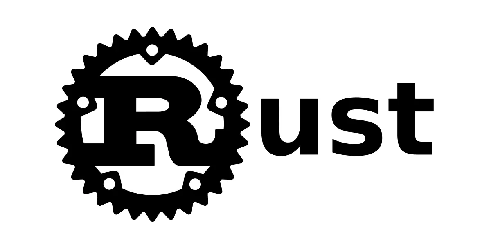
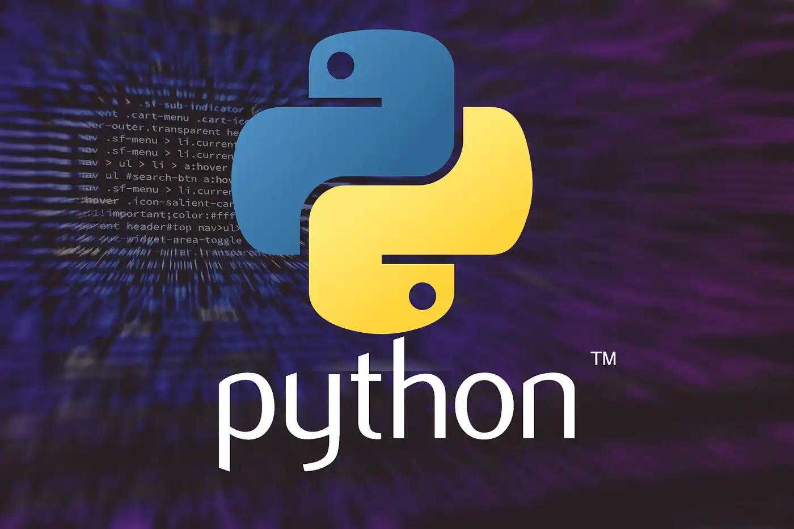
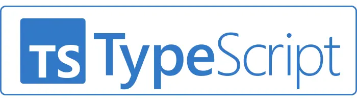
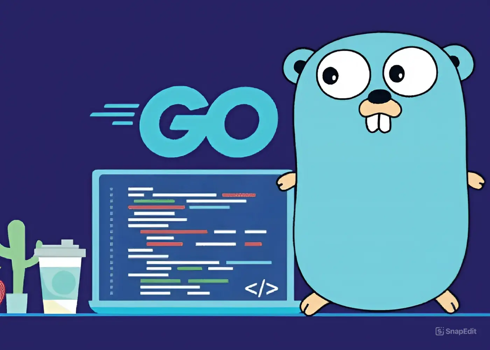
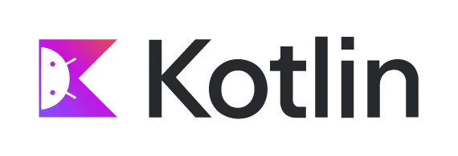

Trending Programming Languages Developers Should Watch in 2024
Keeping up with the latest programming languages can give developers a real edge in an ever-evolving tech landscape. In 2024, a few languages are standing out for their unique strengths in productivity, performance, and ease of use. Here’s a quick look at what’s trending and why you should consider adding these languages to your toolkit.

1. Rust - The Go-To for Performance and Safety
Rust continues to be the language that everyone’s talking about, especially for systems programming. It’s popular because of its memory safety without needing a garbage collector, which makes it great for high-performance applications. Rust’s rigorous compiler can be challenging at first, but developers who master it appreciate the low-level control combined with modern language features. If you’re working with applications that need to be fast and reliable, especially for embedded systems or game development, Rust is worth a look.
2. Python - Still the King for Data and AI
Python remains a top choice for data science, machine learning, and AI applications. Its simple syntax makes it easy to learn, and the language has a rich ecosystem of libraries like Pandas, TensorFlow, and PyTorch that make it a powerhouse in these fields. Despite criticisms about its speed, Python’s versatility and community support keep it highly relevant, especially as AI continues to boom.
3. TypeScript - JavaScript, but Better
TypeScript has become the default choice for developers who want robust, scalable JavaScript for both frontend and backend development. TypeScript adds optional static typing, which catches errors during development and makes large codebases easier to maintain. With frameworks like Angular and popular libraries like React supporting TypeScript, it’s quickly becoming a must-know for frontend and full-stack developers.
4. Go - Simplicity Meets Concurrency
Google’s Go language has been gaining ground, especially in backend development and cloud-native applications. Its simplicity and speed make it ideal for building scalable microservices, and its built-in concurrency support is a dream for developers dealing with cloud infrastructure. If you’re working on web services or distributed systems, Go’s fast compilation times and straightforward syntax make it a strong alternative to more complex languages.
5. Kotlin - Android Development and Beyond
Kotlin is now the preferred language for Android development, but it’s expanding beyond mobile. With support for backend development through frameworks like Ktor and compatibility with Java, Kotlin is gaining popularity for server-side applications as well. Its null safety and coroutines for async programming make it a joy to work with, and its concise syntax is developer-friendly, especially for those with a Java background.
Wrapping Up
In 2024, developers have more language options than ever, each tailored for different purposes. Whether you’re aiming for high performance with Rust, simplicity and concurrency with Go, or scalability with TypeScript, there’s a trending language to fit your needs. Staying adaptable and picking up these in-demand languages can help you keep your skills sharp and open up new opportunities in a competitive tech world.